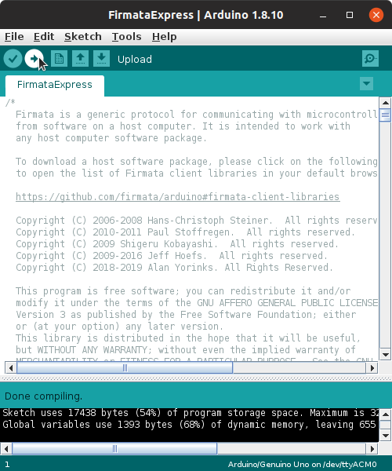

FirmataExpress Installation Instructions
When s3-extend is installed using pip, a package called pymata-express is automatically installed alongside it. The pymata-express package is used to control and monitor your Arduino.
Pymata-express requires a specialized Firmata sketch, called FirmataExpress to be installed on your Arduino Uno.
The following steps explain how to install FirmataExpress on your Arduino.
Step 1: Arduino IDE Installation
If you have not already installed the Arduino IDE on your computer, go
to the Arduino download page
and select a distribution for your operating system.

Step 2: Install FirmataPlus Into The IDE
After installation, open the Arduino IDE and select Tools/Manage Libraries. When the Libary Manager appears, enter FirmataExpress in the search box, and click install.

Step 3: Install The Ultrasonic Library Into The IDE
FirmataExpress also requires that the
ultrasonic library by Erick
Simões for operation. Once again, using the Arduino Library Manager and
search for ultrasonic and find the version by Erick Simoes. Click on the
Tools/Manage Libraries and select Ultrasonic and then click Install.**

Step 4: Go Into The Tools Menus and Verify The Board Type and Port
Step 5: Compile And Upload FirmataPlus Into The Arduino
Select File/Examples and from the drop-down list select FirmataExpress.
Click on the upload button to compile and upload FirmataExpress to the
Arduino.

The Arduino is now ready for use.
Copyright (C) 2019 Alan Yorinks All Rights Reserved